Decepticon
Overload
Decepticon
Overload
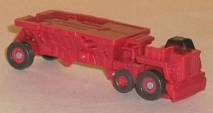 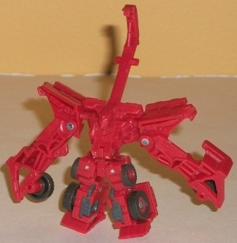
Size : Legend
Difficulty of Transformation : Very Easy
Color Scheme : Moderately dull red and some dark gray and black
Individual Rating : 8.3
Constructicon
Devastator 7-pack (Wal-Mart Exclusive)
Allegiances
: Decepticon
Price
: $32 U.S.
Overall Rating
: 6.8
Decepticon
Overload
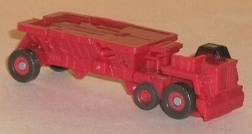
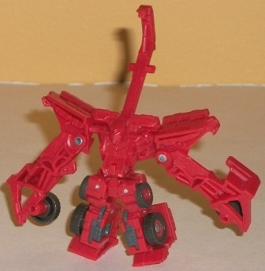
Size
: Legend
Difficulty of Transformation
: Very
Easy
Color Scheme
: Moderately dull red
and some dark gray and black
Individual Rating
: 8.3
Overload's the only Constructicon
of this bunch that not only doesn't have a larger version, but isn't represented
in ANY other toy form-- not even on the near-$100 U.S. version of
Devastator
!
Which is a shame, but because I rather like his design. In vehicle mode
he's an articulated dump truck, and has some pretty good mold detailing
to match it, like vents and even little rivets rims of the wheels. Unfortunately,
like many in this set, he doesn't have much paint detailing to really show
off those details-- only the drivers' area and wheels are painted. This
also makes his color scheme a bit unremarkable, but at least the base color
of dull red works pretty good and looks better, in my opinion, than the
blah yellow used on some of the other Constructicons. The proportions of
this mode are pretty spot-on as well, though unfortunately due to the small
size and transformation, the dump truck can't turn behind the "cab" area
where the actual vehicle would.
Overload's transformation
is very simple, but quite effective as his robot mode looks completely
different from his vehicle mode and has a very unique design. He's a pretty
short guy, having short, squat legs with arms that almost come down to
his feet. Other than the wheels hanging off his claws, though, he really
doesn't have any vehicle mode extras that don't mesh with the overall look
of the mode. The middle parts of his mode form very nice shoulder pads,
and the usage of a small slice of the center of his dump truck to form
a "scorpion tail" is ingenious. Unfortunately, my comments about his lack
of paint detailing definitely carry over to this mode, which really doesn't
have ANY detailing on the robot-specific parts of it. His articulation
is great at the arms-- he has ball-joint movement at the shoulders and
side-to-side movement at the elbows-- and his scorpion tail can move back-and-forth.
Unfortunately, his legs can only move from side-to-side, though. Given
that his legs have large peg holes in them and become the hips of Devastator--
i.e., where a lot of the pressure gets applied-- I'm a bit more forgiving
of this than I would be on most other Legends toys.
Overload forms the back
and hips of Devastator.
Demolishor
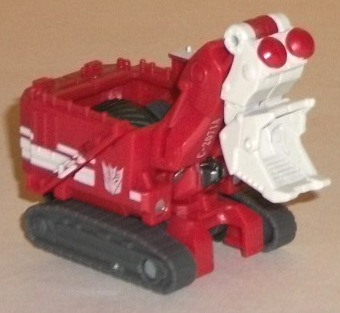
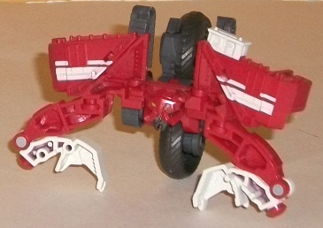
Size
: Legend
Difficulty of Transformation
: Very
Easy
Color Scheme
: Dark gray, moderately
dull red, chalky off-white, and some pale yellow
Individual Rating
: 6.4
Demolishor's excavator
mode is pretty decently represented at this scale, with an appropriate
amount of mold detailing and pretty much all the paint details needed,
too-- no (relatively) large, unbroken bits of one color on this toy. (Though
on a very minor side note, it bugs me a little that Demolishor's white
stripes are painted right over his ladder detailing on the sides.) The
proportions for Demolishor's vehicle mode are pretty good, though the drivers'
area up top is a bit two-dimensional because of the transformation. And
therein lies the big problem with the vehicle mode-- the robot mode extras.
I mean, Demolishor has obviously got some big honkin' tires in the main
body of this mode, with the top of the mode actually "uncovered" so that
they show through blatantly. Plus, the bottom of his head sticks out the
front of the vehicle, though that's a much lesser issue. As far as movement,
his shovel-arm can move up-and-down at the midpoint, but that's it-- it
can't reach particularly far forward or anything.
Demolishor's robot mode
is about as accurate as one can expect, given the rather unique look of
it. That doesn't mean it's a really good-looking mode, though-- I always
thought his design was horribly awkward, and it doesn't look any better
at the Legends class scale. The two big wheels are a bit uneven with each
other when looking from the front, due to the transformation, and he can't
move either wheel forward much. His arms are awkwardly posed too, though
that's a problem even on the
Voyager version
.
The blatant extras in this mode, though-- I mean,
beyond
the halves
of the vehicle mode sitting atop his shoulders as that's part of the design--
are his tread pieces, just kinda stuck behind his shoulders with no real
place to go. At least he continues to have some nice paint detailing, though,
with his face painted quite well at so small a scale. His arms can move
at the shoulders and elbows at one point each, and his wheels can move
a little (mostly from behind him to below him-- not anywhere close to in
front of his head, sadly), but that's it.
Demolishor forms most
of the main body of Devastator.
Hightower
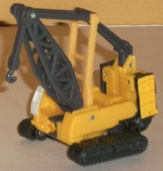
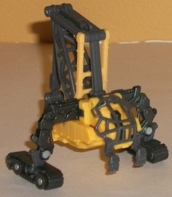
Size
: Legend
Difficulty of Transformation
: Very
Easy
Color Scheme
: Yellow, dark gray,
and some chalky off-white, metallic gunmetal gray, and light red
Individual Rating
: 5.2
Hightower is another
one of the three members of the RotF Constructicons that didn't get a larger
toy than a Legend-- he's a crane in vehicle mode. This mode has pretty
realistic proportions, particularly for a vehicle mode of this small size.
The crane hook piece is too short, but that's the only really glaring problem
in that respect. The only robot mode extra is that the "cage" around his
head can be seen a bit from a rear view, but that's all. His yellow/gray
color scheme is pretty boring, but it is also pretty realistic-- as is
the ugly white used on the cockpit. The mold detailing is incredible for
such a tiny figure though, with the treads particularly well-detailed,
even with little tiny "rivets" here and there. As far as movement, the
crane-hook piece can swing back and forth, but that's it-- the whoel crane
arm can't move up and down because of the transformation.
Hightower is one of
those robot mode designs that's certainly very... unique. Now, I don't
necessarily have problem with unique robot designs, but this one just looks
weird and kinda lazy, honestly. It's pretty much the vehicle mode but with
the rear end up in the air and the treads sticking out from the side to
form very weird-looking "legs" that actually come out of the main body
where you think the arms would be. The cage over Hightower's face is an
interesting concept, but the tiny T-rex hands hanging off the front just
look plain goofy. The scorpion-like tail piece that extends out the back
end of the crane arm is a bit fitting, though given Hightower's rather
animalistic robot form. As for movement, Hightower can move at the tail
(at two points), the piece shoulders (though moving them in towards his
body looks odd), and his ankles. The cage covering his face can also open
up, but I don't really see the point of that...
Hightower forms the
left arm of Devastator.
Long
Haul
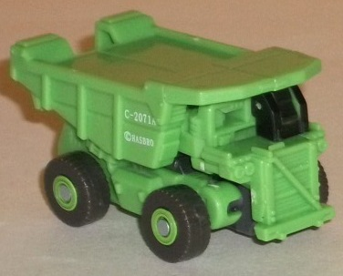
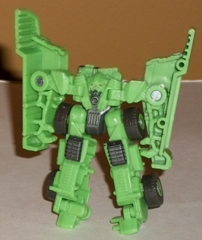
Size
: Legend
Difficulty of Transformation
: Very
Easy
Color Scheme
: Pale moderately light
green, dark gray, and some black and light red
Individual Rating
: 7.8
Long Haul's dump truck
mode is, like most of the other Legends Constructicons', pretty good considering
the size. The proportions are roughly to-scale, though the tires could
be a tad bigger. The robot fingers and feet also stick out just a tad from
the rear end, but that's a pretty minor complaint. The color scheme isn't
clashy, but it's not exactly eye-catching, either-- the light green is
a nice shade, but the dark gray being really the only other color on Long
Haul-- and not used a whole lot-- makes him look a bit dull, particularly
in this mode. This isn't helped by a very low number of paint apps-- the
drivers' area is painted black, but other than that, the allegiance symbol,
and the tire rims, there's no paint detailing at all in this mode. Stuff
like the front grill and headlights could've used some, in particular.
The robot mode has a
bit more of that gray and thus a bit more color variety, but his proportions
are pretty good too, conveying the bulkiness of his design quite well--
and better than his much larger
Voyager toy
,
to boot. His mold detailing-- though decent in vehicle mode-- really shows
through in this mode, with a ton of accurate details packed into such a
small area on his legs, waist, chest, and head. The only real vehicle mode
extras in this mode are the halves of the top of the dump truck on his
lower arms, but this is pretty accurate to the movie model, so I can hardly
complain about here. Long Haul's chief downside in this mode is definitely
the articulation-- he can move at the shoulders (only forward-back), side-to-side
at the elbows, and at ball joints at the hips. So no knee articulation,
and his arm movement is so limited if he wants to point forward, you have
to do it at the shoulder which looks pretty weird with those big pieces
of his vehicle mode on it.
Long Haul forms the
right leg of Devastator.
Mixmaster
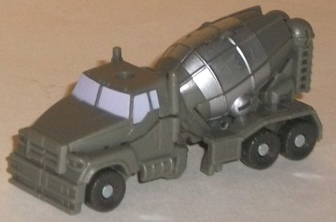
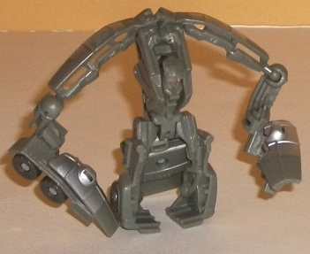
Size
: Legend
Difficulty of Transformation
: Very
Easy
Color Scheme
: Moderately light gray
and some dark gray, light pale purple, bright green, light red, and silver
Individual Rating
: 4.3
Mixmaster's cement truck
mode is pretty good for a Legends class figure, with no real robot extras
to speak of and with the proportions generally okay. The truck cab should
probably be a LITTLE bigger in proportion to the cement drum, but it's
a small discrepancy. His mold detailing is decent enough, with stuff like
the grill and headlights molded in, but man Mixmaster has a boring color
scheme. Light gray accentuated by some silver? Really? The light purple
windows are a nice touch-- even if they're not a very realistic color,
they contrast well-- but they're really the only thing that keeps his color
scheme from being one of the dullest on a Transformer ever.
Good heavens though,
Mixmaster's robot mode is a fright. And not in the good way-- he looks
downright awful. His proportions are absolutely ridiculous-- his arms were
already skinny, but this makes them positively stick-figure-thin, and the
odd, curving nature of them due to the fact that they form the cement drum
makes it even worse. Oh, and the big quarter-pieces of the cement drum
on his lower arms don't really fold out of the way in a pleasing manner,
either. His legs are also oddly-shaped and too short, and, oh yeah, he's
got Devastator's big fat head and skiny neck just hanging on the ground
behind him like a tail. With a face. Even the chest is weird, with the
front of it looking decent enough, but the sides being horribly long proportionally,
and the face is from the initial, "old" design of Mixmaster, when he was
supposed to be an Autobot (also found on the "
Back
Road Brawl
" repaint of the voyager Mixmaster toy). It certainly doesn't
make Mixmaster look imposing in the least. I mean, add all this to his
lack of paint detailing for the robot mode (apart from the eyes), and I
really don't have anything good to say about this mode except that his
articulation is okay-- he can move at the shoulders, elbows, and hips,
with the latter two on ball joints. My least favorite of the Legends RotF
Constructicons.
Mixmaster forms the
head and neck of Devastator.
Rampage
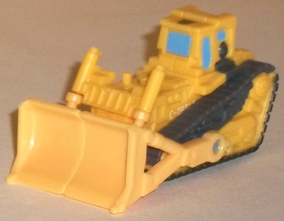
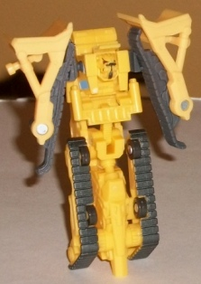
Size
: Legend
Difficulty of Transformation
: Very
Easy
Color Scheme
: Yellow, dark gray,
and some metallic gunmetal gray, light chalky sky blue, and light red
Individual Rating
: 4.7
Rampage's bulldozer mode
makes it over to Legends class size pretty darn well. There's no robot
mode extras to speak of in vehicle mode, and the proportions are great
(the only "but" there is that the cockpit is a tad bigger than it should
be, but it's not too obvious). There's tons of great mold detailing-- pistons,
gears, and the like are molded all over Rampage, even at this tiny scale.
Unfortunately, this makes the lack of paint apps-- a problem on many of
these little Constructicons-- all the more obvious. Rampage's treads are
(mostly) painted gunmetal gray, and his windows are painted a nice light
blue, but that's it in this mode. The light blue serves as a nice contrast
color, but otherwise it's a pretty blah color scheme, especially since
the yellow isn't a particularly fetching shade.
Rampage's robot mode,
well, let's just say it's one of those robot modes were after you do it,
you're SURE you've done something wrong, but you look at the instructions,
and... nope, you transformed him correctly. I mean, in Hasbro/TakaraTOMY's
defense it's gotta be a challenge to get the snake-like Decepticon represented
well at this scale, but... yikes. He has the most literal uni-leg I've
seen on a Transformer, and the treads piece on the sides of it don't look
that great, either. His "arms" are nothing of the sort, but just parts
of his treads and halves of his bulldozer shovel. I don't even really see
a HINT of hands of claws in there. He's also unnecessarily a hunch back,
with his head popping out of the bulldozer cockpit at a somewhat odd angle.
On the plus size, his head is detailed quite well (both in terms of paint
and mold details), and the pistons on his lower chest accurately come from
near the front of the bulldozer mode. That's... about all that's positive
about this mode, though. My least favorite of the Legends RotF Constructicons.
Rampage forms the left
leg of Devastator.
Scrapper
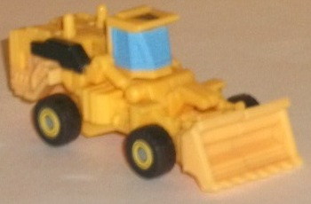
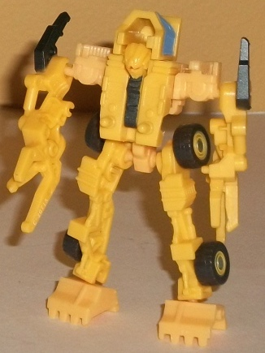
Size
: Legend
Difficulty of Transformation
: Very
Easy
Color Scheme
: Yellow and some dark
gray, light chalky sky blue, metallic gunmetal gray, and light red
Individual Rating
: 8.0
Scrapper is the third
RotF Constructicon who only has a toy in the Legends class. He's an earth
mover, and his vehicle mode is generally pretty good, though there there's
a bit of a claw coming out of the vehicle mode in front of the cockpit,
and the back end is a little longer than it should be-- both side effects
of his other modes at this small of a scale. They're generally pretty easily
overlooked though, with the proportions overall pretty great. The mold
detailing is also fantastic, with pistons and the like molded all over.
The yellow/gray color scheme, as I've already stated with the other like-colored
Constructicons, is pretty boring, though the light blue used for the windows
is a nice contrast color. I wish there was more of it, particularly since
there isn't much of the dark gray-- Scrapper is almost all yellow, here.
His shovel can move up and down slightly due to Scrapper's transformation,
but not as much as you'd like.
Scrapper's transformation
is a bit on the simple side for a Legends class figure, but it's surprisingly
effective, and his robot mode has a very different feel from his vehicle
mode, a very "lanky" look to it that's surprisingly movie-accurate given
the scale. Beyond the cockpit behind his head, there's pretty much no vehicle
mode extras in this mode, and he's got pretty good articulation for a figure
of this size-- he can move at the shoulders (at two points), the hips,
and the ankles, with three of those four points on ball joints. His lack
of paint detailing really shows in this mode, with nearly all of his great
mold detailing being unfortunately unpainted bland yellow. I love the weird
three-pronged claws on each hand, in particular, and the usage of his shovel-halves
for feet is pretty creative. His head design, though not outright bad,
is completely different from the movie model's, which was kind of a weird
choice. Oh, and the less said about the odd placement of the peg-bumps
on his chest, the better. My second-favorite of the set.
Scrapper forms the right
arm of Devastator.
Constructicon
Devastator (Gestalt Form)
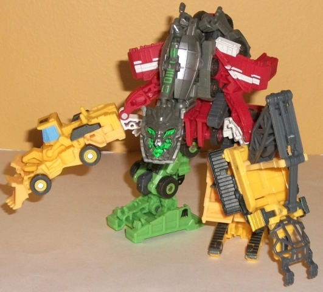
Difficulty of Transformation
: Hard
Individual Rating
: 7.2
Devastator is the impressive combination of seven Legends figures. Because he's so wide, however, he's not as tall as you'd think-- he's roughly about the same height as your average deluxe. So he won't exactly be an imposing figure, but making him at this small a scale avoids the weight/strain issues that you'd have making a larger version of these seven Transformers. His color scheme is a bit of a mish-mash, but I don't mind it since he IS a gestalt, after all, and all of the colors are what you'd expect from construction vehicles. The proportions are generally okay for this scale, though Devastator's upper arms-- formed merely from Demolishor's arms-- are pretty ridiculously skinny. His head is also a bit skinny and long compared to the movie model, but this is a bit less of an obvious issue. The detailing on the face is particularly great, and it's mostly painted, to boot-- there's a nice silver "worn metal" paint wash all across it, "back lit" by bright green paint for the eyes and mouth, and some neat green detaling on his neck. The main body fits together quite solidly, and there really aren't many extra pieces hanging off in the traditional sense, though Mixmaster's legs up around the top do just kinda hang there and don't mesh with the overall silohuette of the figure as well. The Hightower figure does a pretty decent job of forming Devastator's left arm, but I wish the Scrapper-arm could split apart in a manner that made it a bit more convincing of a claw. Both of the legs are very solidly designed, however. The main problem many will have with Devastator is probably his lack of articulation. Now, granted, you are COMBINING seven LEGENDS class figures to make this dude, so that has to be taken into consideration, but still-- Devastator can rotate his arms at the elbows and his legs at the hips. His head-neck assembly can also move at two points, his ankles can move at one point, and there's some SLIGHT rotation movement at the shoulders, but that's it. Not even decent knee movement, due to the transformations. Poseable this guy is definitely not-- the above position is pretty much the only one you'll get him, with the only major changes being which direction his head is facing or at what angle his feet and hands are facing away from his main body.
The Construction Devastator
is an easy recommendation for fans of combiners and Legends class figures.
I mean, you get 7 Transformers figures for $32 U.S., AND they all combine!
That's pretty cool, but just be aware that this causes a few of them--
especially Mixmaster and Rampage-- to be pretty poor in their individual
robot modes. The paint detailing is also really lacking, too. Still, despite
the complaints I have about some of the figures, a few of them individually
still manage to be pretty good Legends toys regardless of their combination
gimmick, and it's hard to deny the draw of a 7-figure combiner at this
scale. However, if articulation, proportions, and paint detailing really
matter to you, this is definitely a set to avoid.
Reviews by Beastbot